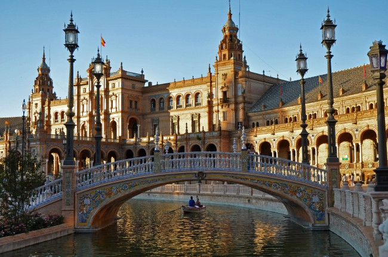
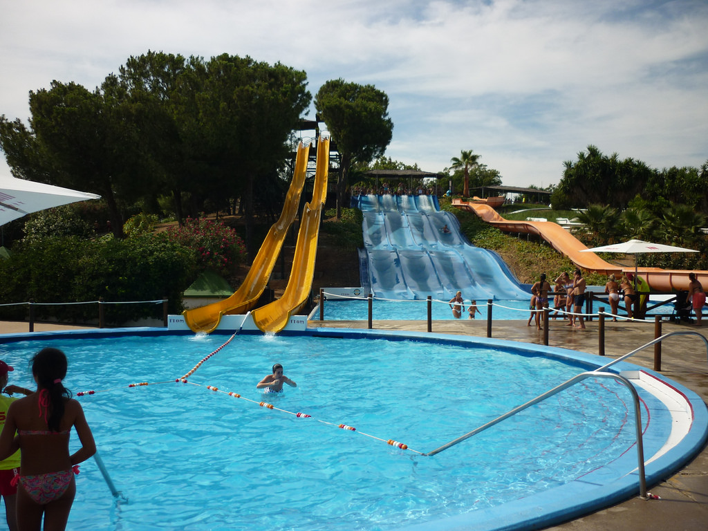
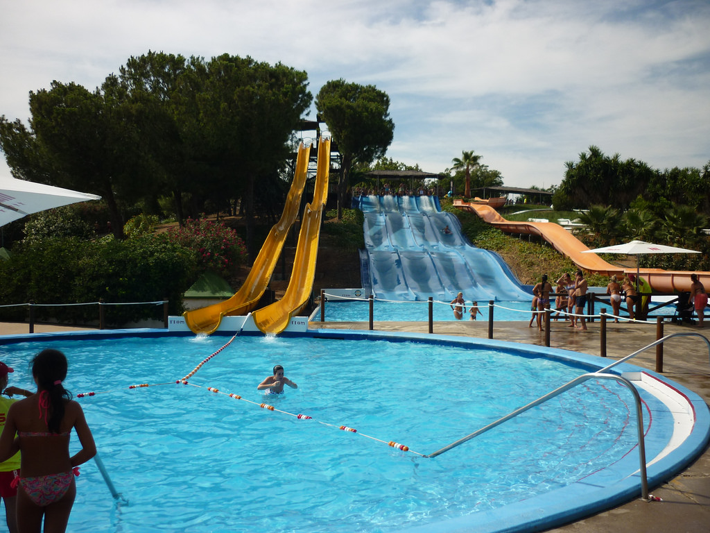

Sevilla was Originally founded as a Roman city and now home to three UNESCO World Heritage Sites, Seville is bursting with antique charm. The Alcazar palace complex is a stunning collage of architectural styles, and the Cathedral will impress you with its beauty and its status as the burial site of Christopher Columbus. The Metropol Parasol is the world’s largest wooden structure, a massive mix of grids and swirls that contains a market and a terrace observatory. lets explore more about this city
 
Home

Home